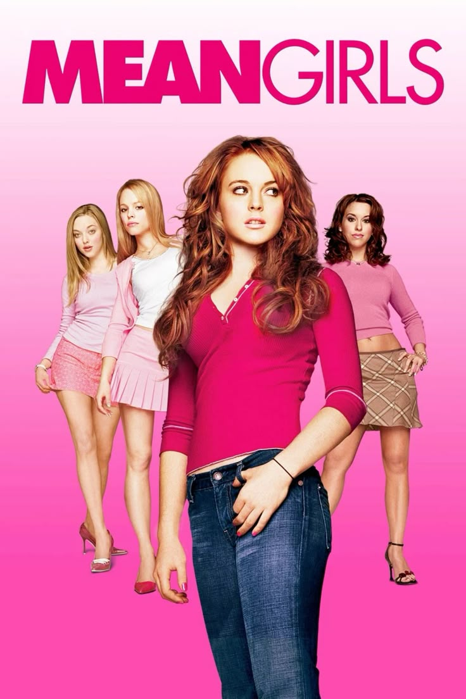

Arquivo Cultural
Mean Girls
Mean Girls se tornou um dos maiores ícones da cultura pop dos anos 2000. O filme influenciou a moda, a linguagem e diversas referências utilizadas até os dias atuais.
A obra demonstra como o cinema pode ultrapassar o entretenimento e se tornar parte da identidade cultural de uma geração.